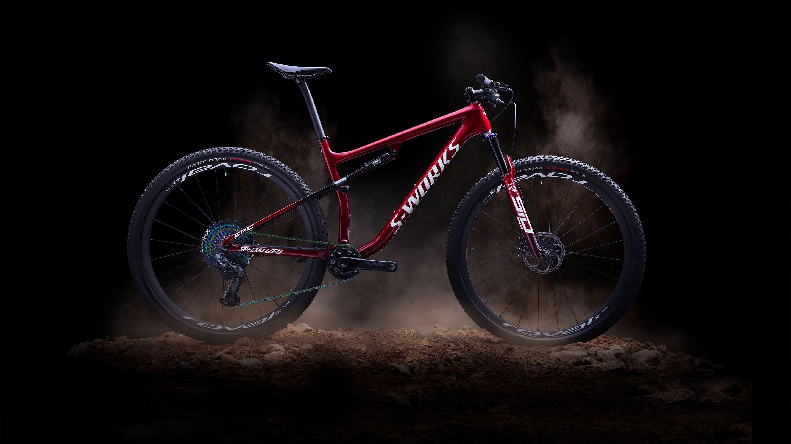
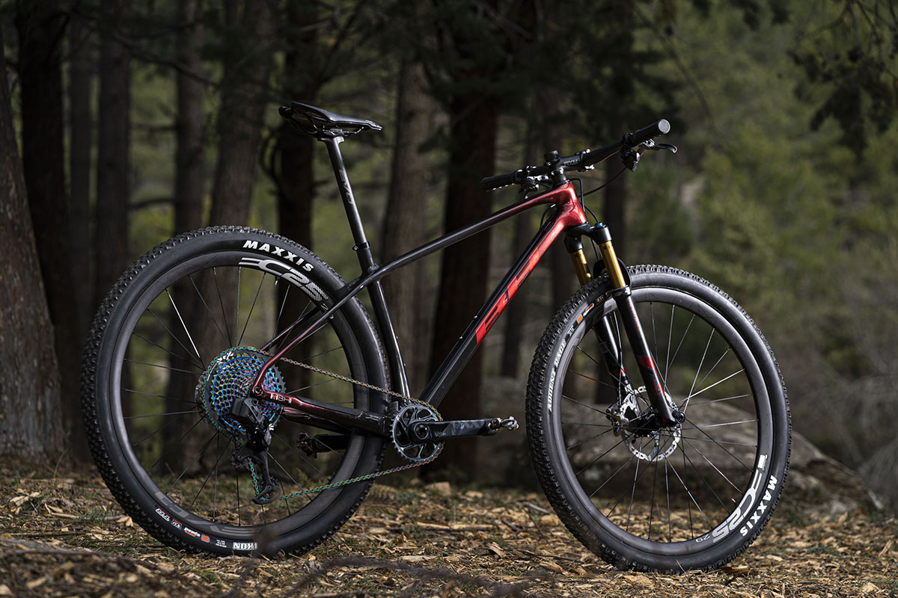

CROSS COUNTRY
La modalidad más clásica y convencional del ciclismo de montaña. Es decir, el mountain bike original, con recorridos mixtos por la montaña o el campo que combinan senderos llanos, con tramos de obstáculos, subidas y descensos.
 